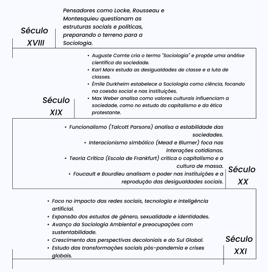

Olá, está preparado para fazer parte da família de sociólogos, SOCIEDADE EM FOCO?
SOCIOLOGIA
é uma das ciências humanas que estuda a sociedade, ou seja, estuda o comportamento humano em função do meio e os processos que interligam os indivíduos em associações, grupos e instituições.
 1.png)
DESCUBRA A SOCIEDADE
Por que seguimos regras, formamos grupos e enfrentamos mudanças? A sociologia ajuda a entender a organização da sociedade e o papel de cada indivíduo nela. Mais do que uma matéria, é um convite para enxergar o mundo de forma crítica e ser parte ativa das transformações ao nosso redor!
TEÓRICOS
Karl Marx
Marx utilizou uma sociologia para compreender as estruturas econômicas e sociais que moldam as relações huma nas. Ele desenvolveu o materialismo histórico , uma teoria que explica como as forças econômicas e a luta de classes (entre burguesia e proletariado) impulsionaram as mudanças sociais. A sociologia marxista concentra-se em questões como exploração, alienação e desigualdade, destacando o impacto do capitalismo nas estruturas sociais. Conexão com a Sociologia : Marx apresentou uma abordagem crítica à sociologia, enfatizando como as relações de poder e os sistemas econômicos moldam a sociedade, o que promoveu estudos sobre desigualdade social e movimentos por justiça social.
Émile Durkheim
Durkheim localizou a sociologia como uma disciplina científica, separada da filosofia ou psicologia, enfatizando o estudo dos fatos sociais . Esses fatos são padrões de comportamento que existem fora dos indivíduos e exercem influência coercitiva sobre eles. Ele demonstrou como o suicídio pode ser investigado sociologicamente, identificando causas sociais (ex.: integração e regulação social) ao invés de apenas fatores individuais. Sua obra também analisa a divisão do trabalho , explicando como ela promove a solidariedade social, seja mecânica (em sociedades tradicionais) ou orgânica (em sociedades modernas). Conexão com a Sociologia : Durkheim fundamentou a sociologia como uma ciência empírica, mostrando que as características sociais têm causas e efeitos específicos que podem ser treinados de forma objetiva.

TEMAS
- . Estratificação Social: Estudo das desigualdades sociais, como classe, gênero, raça e mobilidade social.
- . Cultura e Identidade: Como normas e valores culturais influenciam a identidade individual e coletiva.
- . Poder e Política: Análise das estruturas de poder, sistemas políticos e participação cidadã.
- . Trabalho e Economia: Relações de trabalho, capitalismo e impactos da globalização.
- . Família e Socialização: Mudanças nos modelos familiares e a socialização dos indivíduos.
- . Educação: O papel das escolas na reprodução ou transformação das desigualdades.
- . Religião: Impacto das crenças e práticas religiosas na coesão social.
- . Movimentos Sociais: Mobilizações coletivas e lutas por direitos.
- . Globalização: Efeitos culturais, econômicos e sociais da integração global.
- . Desigualdades e Exclusão Social: Estudo da pobreza, marginalização e políticas de inclusão.
HISTÓRIA
